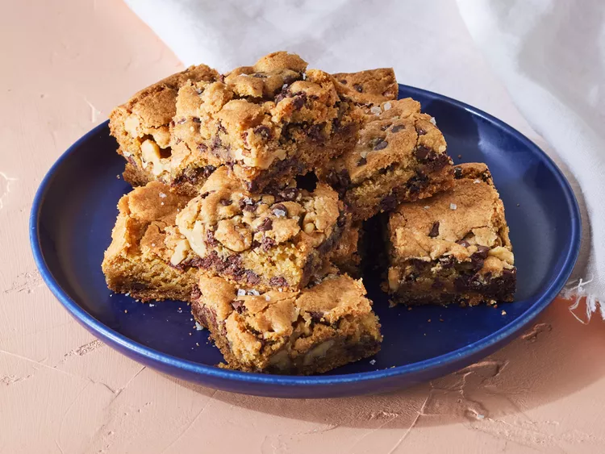

Chocolate Chip Cookie Bars

Description
These chocolate chip cookie bars have all the flavor of chocolate chip cookies and all the ease of a bar.
Studded with mini chocolate chips and toasted walnuts, they're rich and delicious.
Ingredients
- baking spray with flour
- 1 1/3 cups white sugar
- 2/3 cup packed light brown sugar
- 1 cup unsalted butter, softened
- 2 large eggs
- 2 teaspoon vanilla extract
- 3 cups all-purpose flour
- 1 teaspoon baking powder
- 1 teaspoon kosher salt
- 3/4 teaspoon baking soda
- 2 cups mini semisweet chocolate chips
- 1 cup toasted, chopped walnuts
Steps
- Preheat the oven to 350 degrees F (175 degrees C). Gather all ingredients.
- Line bottom and sides of a 13x9-inch baking pan with heavy duty aluminum foil,
leaving a 2-inch overhang on all sides, lightly spray with baking spray; set aside.
- Beat together white sugar, brown sugar, and butter with a stand mixer fitted with paddle
attachment on medium speed until light and fluffy, about 3 minutes, stopping to scrape down sides as needed.
- With mixer running on low, add eggs, one at a time, beating until just combined after each addition.
Beat in vanilla until just combined.
- Whisk together flour, baking powder, salt, and baking soda in a medium bowl until combined.
With stand mixer running on low speed, gradually beat in flour mixture until almost fully incorporated,
about 2 minutes, stopping to scrape down sides as needed.
- Stir in chocolate chips and toasted walnuts until combined.
- Transfer dough into prepared baking pan, spreading into an even layer.
- Bake in preheated oven until golden brown and set, about 40 minutes,
rotating baking pan front to back halfway through.
- Let cookie cool completely in pan on wire rack, about 1 hour.
Using foil overhang as handles, lift cookie out of pan.
- Cut into 24 (about 2-inch) squares.